| 日付 | 2023年7月30日（日） |
|---|---|
| 山域 | 日光周辺 |
| メンバー | 単独 |
| 山行形態 | 日帰り |
| アクセス | 車 |
| ルート (Map) | 霧降高原駐車場 (6:49) - (7:19) 小丸山 - (8:12) 赤薙山 - (8:51) 奥社跡 - (9:27) 一里ヶ曽根 - (10:23) 女峰山 (10:54) - (12:14) 奥社跡 - (12:47) 赤薙山 - (13:23) 小丸山 - (13:45) 霧降高原駐車場 |
ほぼ2ヶ月振りの山登り。信じられないくらい暑い日々が続いていて、
涼しい山を求めて、日光の女峰山に向かうことにする。
女峰山に行くのは14年振りだ。
霧降高原の駐車場に到着。標高1340m。
本日は朝4時に起床し、登山開始は6時台。
涼しいと言えば涼しいが、直射日光がきつい。
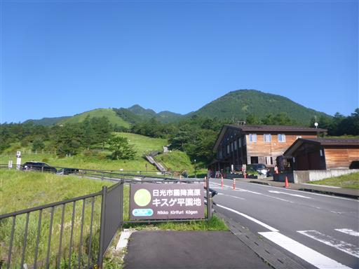
あちらこちらにオオバギボウシが咲いている。
ニッコウキスゲはもう全く咲いていない。
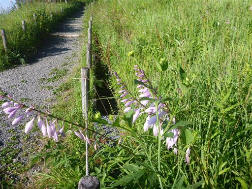
6年前に、右に見える丸山に登ったのを思い出す。
当時はまだ子供たちが小さくて、雪に苦労した。
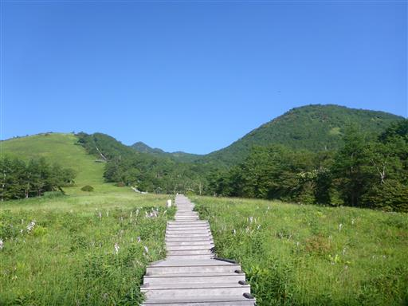
ここからの階段地獄は結構きつい。まだ7時だが日差しが暑い。
驚いたことに、こんな朝早くから観光客の姿をたくさん見かける。
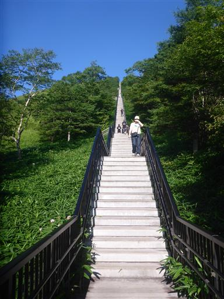
ようやく1000段。この先の道のりの長さを考えると、こんなところでへばっていられない。
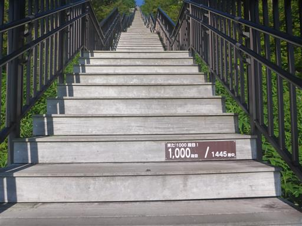
展望台に到着。左の目立つ山は高原山だ。
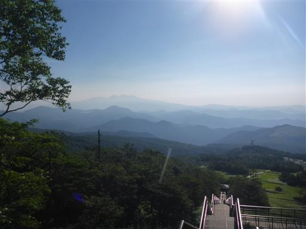
どこまでも折り重なる山々。素晴らしい展望だ。
下の方は靄が出ているが、山頂からは素晴らしい展望が期待できそうだ。
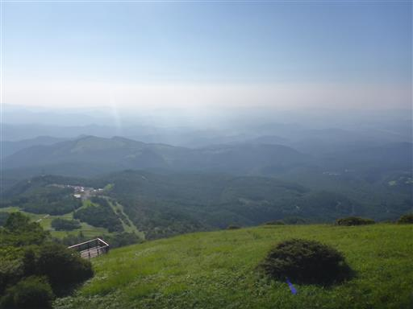
こちらは日光前衛の山々。
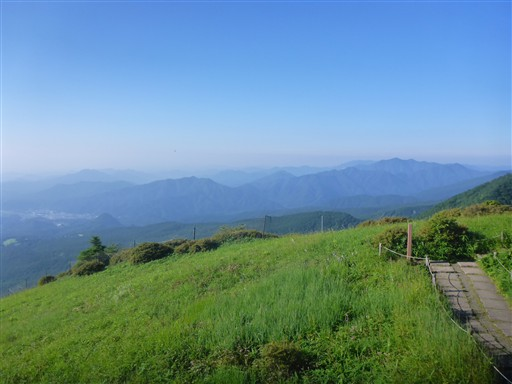
展望台から少し登って小丸山に到着。季節は異なるが、以前来た時と同じ景色が広がる。
前回はここから右折して丸山を目指した。今回は正面に見える赤薙山を目指す。
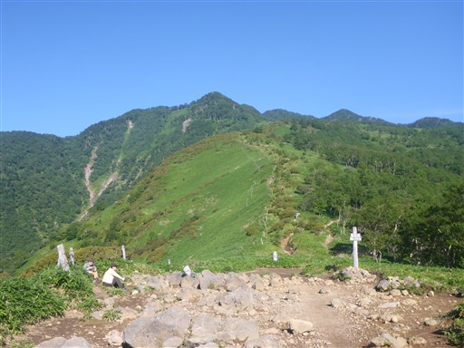
素晴らしい展望の広がる登山道だが、樹木が無いため非常に暑い。
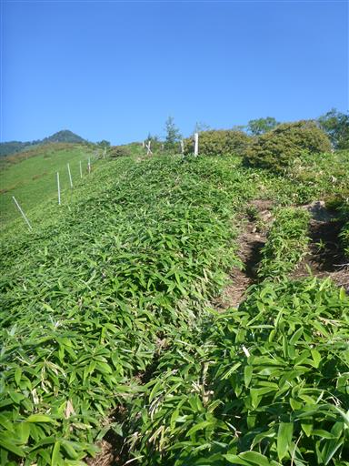
灌木帯。日差しを遮るような木はない。逆に風が遮られて余計に暑い。
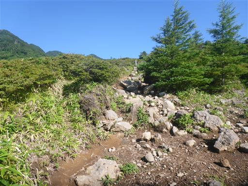
丸山はもう眼下に見える。
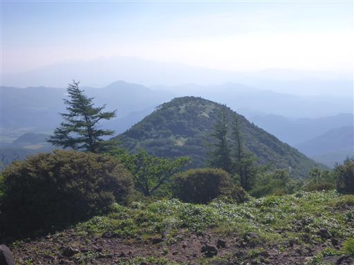
斜面の笹原が美しい。
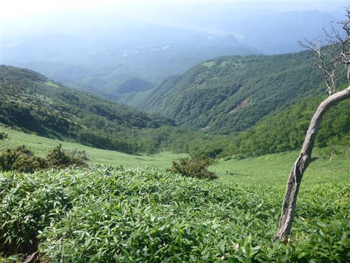
赤薙山に近づいて、登山道はようやく樹林帯の中の道になる。
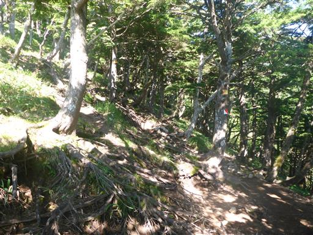
赤薙山と女峰山の標識。赤薙山の先に女峰山があるのだが、なぜ方向が違うのだろう？
巻道があるのかもしれないが、今回は赤薙山に登ることも目的なので、赤薙山方面に進む。
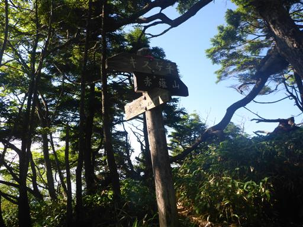
赤薙山に到着。標高2010m。
山頂には鳥居があり、赤薙山神社がある。あまり展望は広がらない。
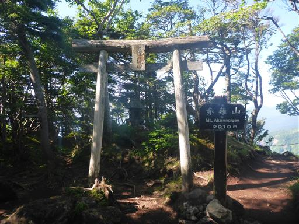
木の切れ目から真ん中奥の女峰山の姿が望める。まだまだ距離がある。
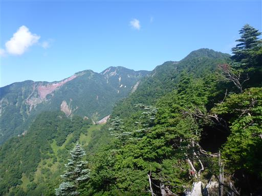
こちらは男体山。存在感がある山だ。
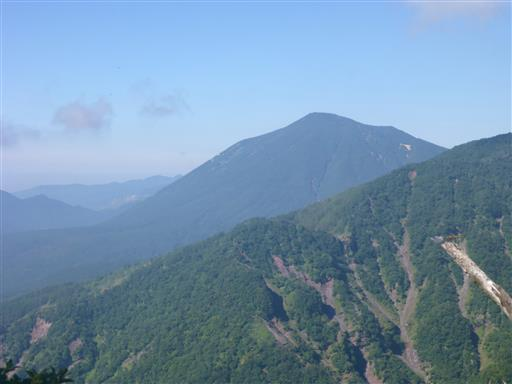
ここからは比較的傾斜が緩くなり、楽な道が始まる。
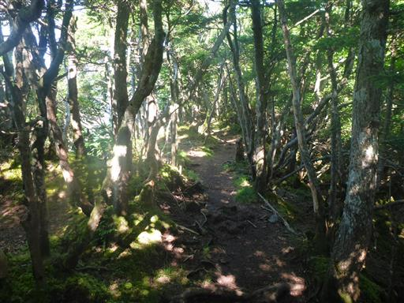
まだ8時半なのに、もう雲があがってきている。
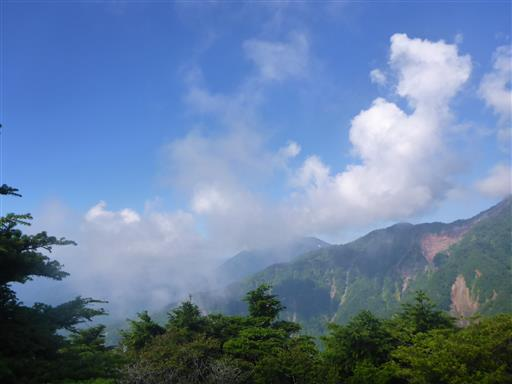
なぜかこの木はきれいに色付いている。
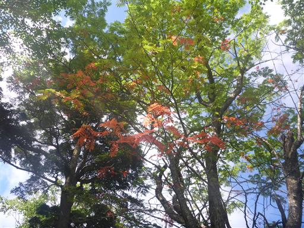
赤薙奥社跡に到着。小さな空間だ。
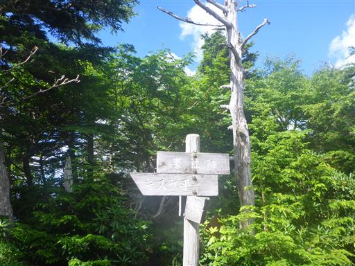
登山道にシャクナゲが出てくる。もう花は咲いていない。
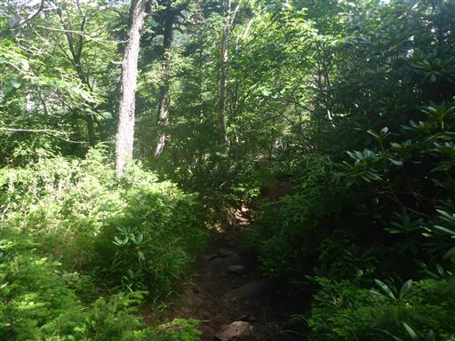
平坦な登山道が続く。尾根が広い場所はぬかるんでいる。
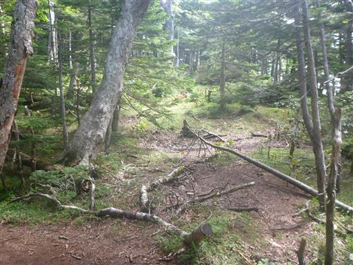
鹿に樹皮を食べられたのだろうか？樹皮の下は真っ赤で痛々しい。
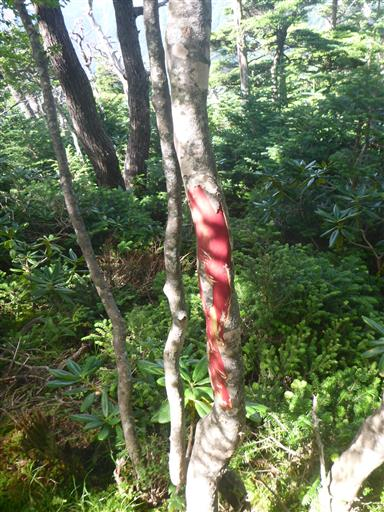
雲がやって来ては去っていく。
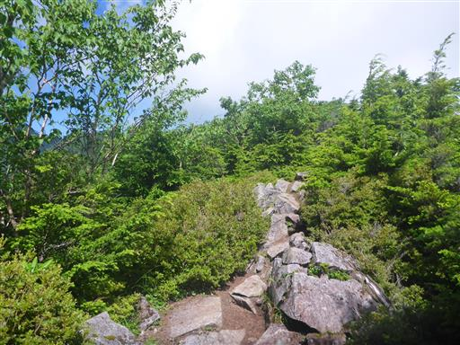
女峰山にだいぶ近づいてきた。
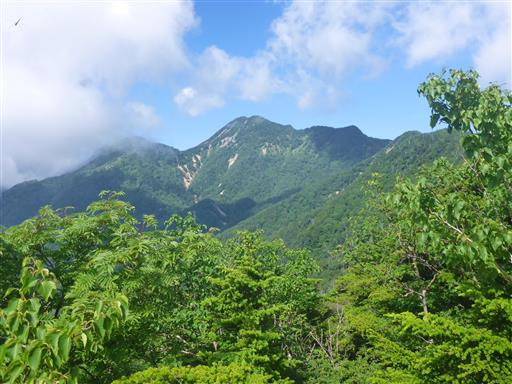
歩きやすい樹林帯の道。
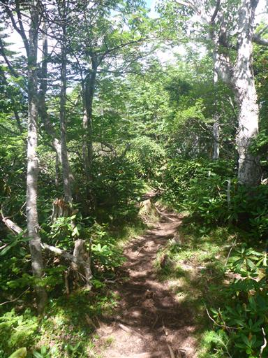
一里ヶ曽根に到着。標高2295m。
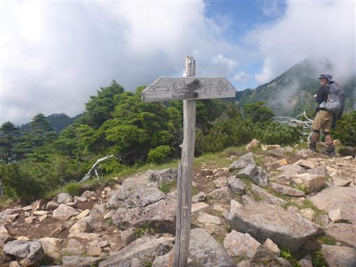
ここは展望の良い場所。女峰山が雲に覆われそうだ。
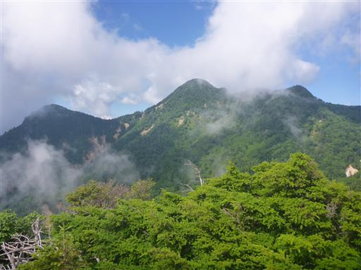
斜めに生える大木。かなりの面積を占めているので存在感がある。
だいぶ木が生長した後に傾いたのだろうか？
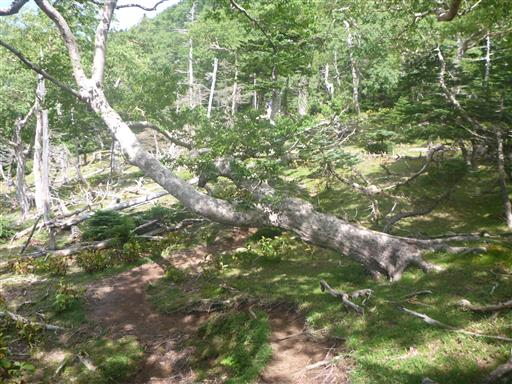
僅かに咲き残っている小さなシャクナゲの花を発見。
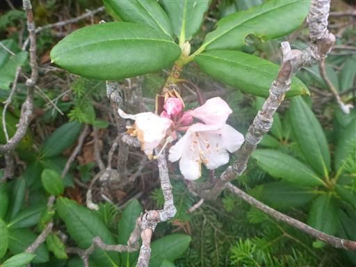
本山行唯一の岩場。ロープがあるが無くても比較的容易に登れる。
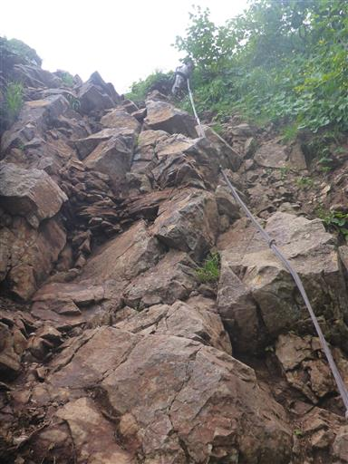
山頂はもう目と鼻の先だが、空は完全に真っ白になってしまった。
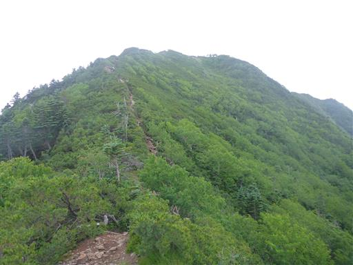
山頂直下に建つ女峰神社。
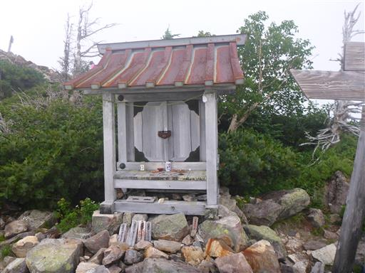
女峰山に到着。標高2483m。
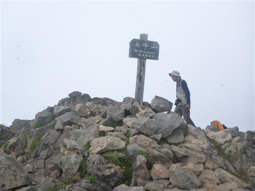
帝釈山に続く稜線は雲に覆われてほとんど見えない。
快晴の中の最高の展望を期待していただけに、これにはがっかりだ。
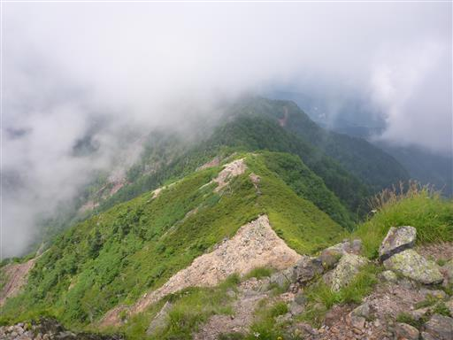
山頂直下に一輪だけ咲くトウヤクリンドウ。
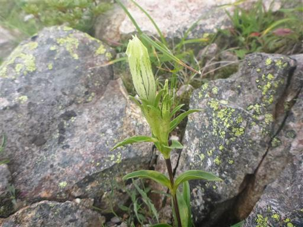
山頂は凄まじい数のトンボが飛んでいる。
トンボが多い場所は鬱陶しいハエなどが少ないので助かる。
恐らくトンボが食べてくれているのだろう。
雲が消える気配がないので、30分の滞在で山頂を出発する。
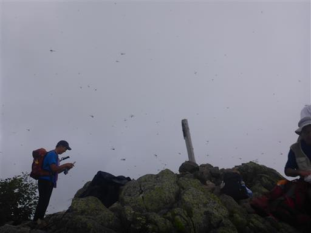
往路を戻る。登りの時と比べて下りは長く感じる。
ここまで長いと歩くのに飽きてくる。
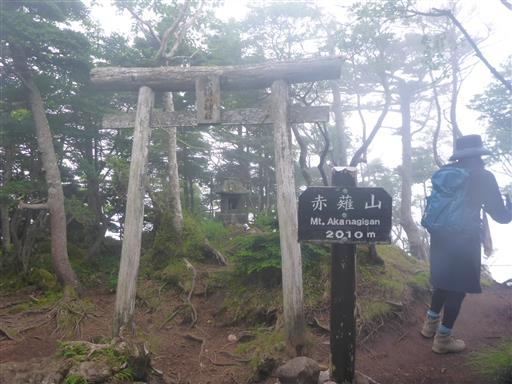
登山道も完全に雲に覆われてしまった。少し雨がパラついてくる。
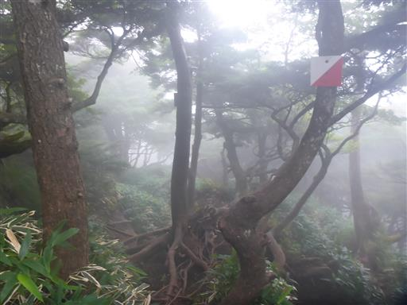
小丸山に到着。背後に聳える赤薙山は影も形も見えない。
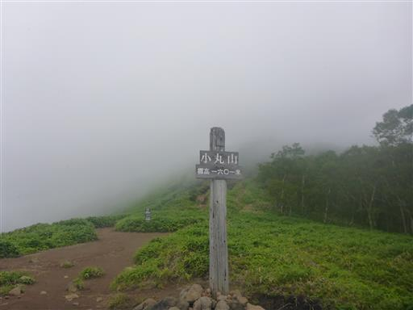
小丸山の展望台まで戻ってくる。
どんよりとした雲だが下界は晴れているように見える。
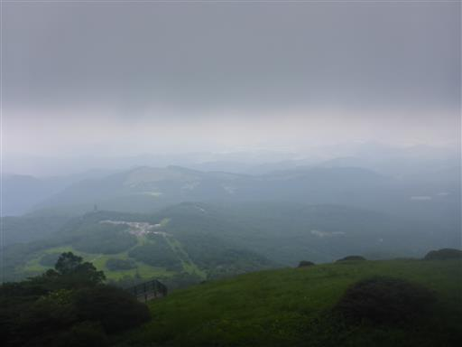
下りも階段が長い。
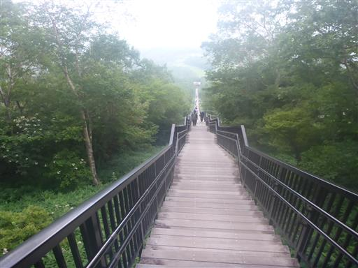
下山。
登りはじめは絶好の快晴で、ウキウキしながら登っていたのに、
途中から雲に覆われてしまい、山頂からは完全に展望がなくなってしまったのは残念だった。
完全に体力維持のための山行になってしまったが、2か月振りの山登りの割には
それなりのペースで歩くことができたのは収穫だった。
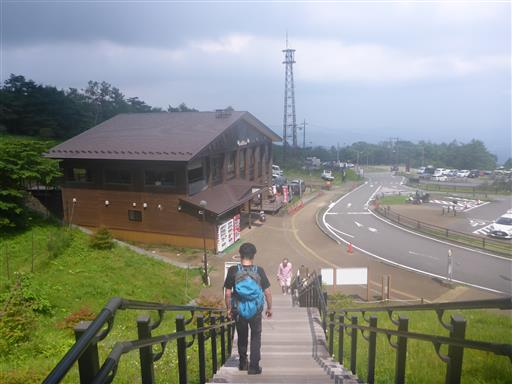